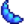

Yanardağ Zindanı

Yanardağ Zindanı, Zencefil Adası'nın kuzey kısmının sonundaki yanardağın içinde bulunur ve dağın güney tarafındaki büyük bir mağaradan giriş yapılır. Zindan, oyuncunun Demir Ocağı'na ulaşmak için tamamlaması gereken on seviyeden oluşur, bir nevi zindanı "bitirmek" de denilebilir.
Mağaraya girince, oyuncu bir lav nehri ile karşılaşır ve ardında da Yanardağ Zindanı yatar. Girişin batı tarafında de bir su havuzu bulunur. Doğu tarafında da bir geçit bulunur, başlangıçta kapalıdır ve geçidin güney tarafında da yerde erişelemeyen bir buton bulunur.
Lav nehrini aşmak ve zindana girmek için üstüne sulama kabı ile su dökülebilir, bu da üstünde yürülenebilir bir yol oluşturur. Çelik (veya üstü) sulama kabı ile tek sıra halinde 5 kare oluşturulabilir, bu da tek bir alet kullanımı ile yeterli uzunlukta bir köprü oluşturmak demektir. Köprü, gün boyu kalır, ancak her gece yok olur. Oyuncu, zindanı tamamladıktan sonra bir papağan 5 Altın Ceviz karşılığında kalıcı bir köprü oluşturmayı teklif eder.
Lav nehri geçildikten sonra, oyuncu zindanın ilk seviyesine girmek için kuzeydeki bir geçitten geçebilir.
Zindanda Geçiş
Kafatası Mağarası ve Madenler'in aksine, Yanardağ Zindanı'nda hızlı çıkışlar veya seviyeler arası inişler yoktur. Bunun yerine, oyuncu her seviyede sonraki seviyeye çıkan geçidi bulmalıdır. Zindandan çıkmak için gidilen yolu geri dönerek mağaranın girişine geri dönülmelidir, Işınlanma Totemleri veya Dönüş Asası da kullanılabilir. Yanardağ Zindanı'ndayken 02:00'da uyuyakalan bir oyuncu, sonraki günde Ada Çiftlik Evi'nde uyanır ve parasından da  2.500g alınır.
2.500g alınır.
Zindanda oyuncu farklı tür canavarlar ile karşılaşır ve Mistik Taş veya Köz Parçacığı, mineraller ve diğer cevherler (iridyum dahil) veren diğer madencilik düğümleri bulabilir. Dokuzuncu seviye her zaman bir sandık barındırır. Madenler ve Kafatası Mağarası'nın aksine; oyun, her gün ve her seviyede bir eşya barındırır. Zindandan çıkmak ve tekrar girmek bunu tekrarlayamaz.
Beşinci seviyede papağan belirdiğinde 5 Altın Ceviz karşılığında özel bir zindan çıkışı (zeminde bir delik) oluşturabilir. Bu, oyuncuyu yanardağın doğu kısmında, Papağan Ekspresi'nin yanına ulaştırır. Dışarı çıkıldığında oyuncu tekrar beşinci seviyeye giremez ve mağaraya girerek tekrar başlamalıdır.
10. Kat
Yanardağ Zindanı'nın sonunda Demir Ocağı bulunur.
Onuncu seviyenin güneybatısındaki köşede de oyuncuyu mağaranın girişindeki geçide ulaştıran açık bir geçit bulunur. Oradan girildiğinde de oyuncu, zemindeki butona basarak kalıcı olarak giriş geçidi açabilir, bu da sonraki zamanlarda bu yerler arasında ulaşımı sağlar. Bir başka deyişle, zindanı tamamen bitirmek, Demir Ocağı'na kalıcı erişim sağlar.
10. kat ile giriş arasındaki kısayol açıldığında belirebilecek 20 farklı kat şekli daha eklenir.
Yanardağ zindanı, çeşitli Canavarlar barındırır.
| Görsel | Canavar | Sağlık | Hasar | Notlar |
|---|---|---|---|---|
| Nöbetçi Cüce | 300 | 18 | Bir kasa kırıldıktan sonra doğma şansı vardır. Öldürülünce değerli taş düşürebilir. | |
| Düzmece Örtüğü | 290 | 15 | Taş yengecinin davranışını sergiler. Neredeyse her zaman öldürülünce bir Magma Mantarı düşürebilir, bazen Köz Parçacığı da düşürür. | |
| Delifişek | 215 | 18 | Az sağlık veya ölümde, hızlıca patlayan bir bombaya dönüşür. Öldürülünce Güneş Özü düşürebilir. | |
| Lavpusu | 220 | 15 | Duvarların içinden geçebilen 4 ateş topu fırlatır. Öldürülünce Kemik Parçası veya Ejderdişi düşürebilir. Eğer kara ile arasında iki boşluk varsa öldürülmesi mümkündür. | |
| Magma Tayfı | 220 | 15 | Öldürülünce Köz Parçacığı düşürebilir. | |
| Kıvılca | 310 | 15 | Oyuncuya Yanık etkisine uğratabilir. Öldürülünce Köz Parçacığı düşürebilir. | |
| Magma Kazılcası | 380 | 16 | Öldürülünce Gölevez Yumrusu, Köz Parçacığı veya Büyük Bomba düşürebilir. | |
| Çizgili Balçıkçalar | 415 | 23 | Öldürülünce Kaplan Şapkası, Zencefil, Gölevez Yumrusu, Ananas Tohumu veya Mango Fidanı düşürebilir. |
Özel Katlar
Yanardağ Kalderası
Zindanın 10. seviyesinde Demir Ocağı bulunur. Oyuncu Köz Parçacıkları ödeyerek silahlarının ve ekipmanlarının üzerinde çeşitli mineraller kullanabilir, bu da onları zenginleştirir ve büyüler. Bu seviye, güneybatı köşesinde yanardağın girişine ulaşan bir çıkış barındırır. Oyuncular magmada balık tutarak Lav Yılanbalığı, Çöp ve 'Fizik 101' tablosu yakalayabilir. Mükemmellik tamamlandıktan sonra, gizli bir şapka elde edilebilir.
Kilitli Geçitler
Zindanın bazı katlarında sonraki seviyeye çıkan geçit, bir kilidin arkasında olabilir. Kilit, açılışını kontrol eden küçük renkli noktalara sahiptir: kilitli için kırmızı, kilitsiz için yeşil. Kilit, bütün noktalar yeşil olduğunda açılabilir ve böylece oyuncu sonraki seviyeye ulaşabilir.
Kilit, 1 ila 3 arası basınç plakaları ile açılabilir. Bir plakanın üstüne basmak, kırmızı noktanın bir yeşil noktaya dönmesini sağlar. Oyuncu, sonraki seviyeye geçebilmek için mevcut seviyedeki bütün bu plakaları bulmalıdır.
Mantar Katları

Yanardağ Zindanı'nda, mantar katları Magma Mantarları ve Düzmece Örtükleri barındırır, bunlar oyuncu yakınlaştığında canlanır ve oyuncuya saldırır. Ayrıca çimen gibi kesilebilen mantar kapçıkları da bulunur. Bu kapçıklardan %0,5 ihtimalle Eski Tohum çıkabilir.[1]
Adalar
Bazı katlar, lav ile çevrili adalar barındırır. Adalarda basınç plakaları, hazine sandıkları veya işe yarayan madencilik düğümleri bulunur. Onlara erişmek için, lav üzerinde sulama kabı ile su dökülerek bir köprü oluşturulabilir. Zindanın içinde balık tutmak mümkün değildir.
Hazine
Belirebilecek iki hazine sandığı türü vardır: yaygın ve nadir. Bir sandığın nadir olma olasılığı 9. seviyede önemli ölçüde fazladır ve ayrıca Şans ile etkilenir.
Yaygın Hazineler

Aşağıda yaygın sandıklardan düşebilecek tüm ögeler bulunur.[2] Açılan ilk yaygın sandık, çıkan ögenin yanında bir Altın Ceviz de verir.[3]
| Görsel | İsim | Açıklama | Adet | İhtimali |
|---|---|---|---|---|
| Köz Parçacığı | Yakınındakilere içindeki parıltının sıcaklığını hissettirir. | 1 | 1/7* | |
| Altın Hindistan Cevizi | Bu sert cevizi ancak işini bilen bir varlık kırabilir. | 1 | 1/7* | |
| Gölevez Yumrusu | Yazın ekilir. 10 günde yetişir. Su kenarına ekilirse daha çabuk yetişir. | 8 | 1/7* | |
| Ananas Tohumu | Yazın ekilir. 14 günde yetişir ve sonrasında yetişmeye devam eder. | 5 | 1/7* | |
| Korunma Yüzüğü | Hasar aldıktan bir süre sonra dahi korunma sağlar. | 1 | 1/7* | |
| Ruhemici Yüzük | Her canavar kesildiğinde birazcık enerji kazandırır. | 1 | 1/7* | |
| Cüce Kılıcı | Eski ama asla körelmeyen bir kılıç. | 1 | 1/21* | |
| Cüce Çekici | Zayıf bir vızıltıya neden olur. | 1 | 1/21* | |
| Cüce Hançeri | Eski ama asla körelmeyen bir hançer. | 1 | 1/21* |
Nadir Sandıklar

Aşağıda nadir sandıklardan düşebilecek tüm ögeler bulunur.[2] Açılan ilk yaygın sandık, çıkan ögenin yanında bir Altın Ceviz de verir.[3]
| Görsel | İsim | Açıklama | Adet | İhtimali |
|---|---|---|---|---|
| Köz Parçacığı | Yakınındakilere içindeki parıltının sıcaklığını hissettirir. | 10 | 1/9* | |
| Denizkızı Çizmeleri | Denizkızı pulları bu çizmelere koruyucu güç sağlar. | 1 | 1/9* | |
| Ejderpulu Çizmeleri | Bu parlak çizmeler aşırı serttir. | 1 | 1/9* | |
| Altın Hindistan Cevizi | Bu sert cevizi ancak işini bilen bir varlık kırabilir. | 3 | 1/9* | |
| Zümrüdüanka Yüzüğü | Günde bir kere olmak üzere bayıldıktan sonra sağlığın bir kısmını geri kazandırır. | 1 | 1/9* | |
| Sıcak Cava Yüzüğü | Canavar keserken kahve bulma olasılığını yüksek oranda arttırır. | 1 | 1/9* | |
 |
Büyük Korsan Şapkası | Sadece en ünlü korsanlardan biri tarafından takılabilir. | 1 | 1/9* |
| Deve Kuşu Yumurtası | Dünyanın en büyük yumurtası olabilir. | 1 | 1/9* | |
| Ejderdişi Kılıcı | Büyülü bir dişten yapılma kılıç. | 1 | 1/27* | |
| Ejderdişi Sopası | Büyülü bir dişten yapılma sopa. | 1 | 1/27* | |
| Ejderdişi Hançeri | Büyülü bir dişten yapılma hançer. | 1 | 1/27* |
*Bir tane ceviz kırılana dek iki sandıktan da bir Altın Hindistan Cevizi bulma şansı yoktur. Bu yüzden eğer bir ceviz kırılmadan önce şans oranları; yaygın sandıklarda ögeler için 1/6 ve silahlar için 1/18, nadir sandıklarda ögeler için 1/8 ve silahlar için 1/24 olarak değiştirilir.
Metal Kasalar
5. kattaki Cüceye yakın olan dışında Yanardağ Zindanı'ndaki bütün sandıklar her zaman aşağıdaki tablodan bir öge barındırır:[4]
| İçerik | İhtimali |
|---|---|
| Hiçbir şey | %18 |
| %18,86 | |
| %6,86 | |
| %6,86 | |
| %6,86 | |
| %6,86 | |
| %6,86 | |
| %6,86 | |
| %3,29 | |
| %2,4 | |
| %2,4 | |
| %2,4 | |
| %2,4 | |
| %2 | |
| %0,89 | |
| %0,89 | |
| %0,89 | |
| %0,89 | |
| %0,89 | |
| %0,89 | |
| %0,89 | |
| %0,89 |
5, kattaki Cüceye yakın olan sandık her zaman aşağıdaki tablodan bir öge barındırır:[4]
| İçerik | İhtimali |
|---|---|
| Hiçbir şey | %18 |
Magma Mantarı (altın kalite)
|
%80 |
| %2 |
Ek olarak bütün sandıklarda eğer sandık Havuç Tohumu, Yaz Kabak Tohumu, Brokoli Tohumu veya Kış Kavunu Tohumu dışında bir öge çıkarmışsa aşağıdakilerden biri ekstra olarak çıkabilir:
| İçerik | İhtimali | Gerkesinim |
|---|---|---|
| %10 | Sandıklardan en fazla 5 tane Altın Ceviz toplanılabilir. | |
|  Qi Tohumu (%1-2) | %5 | Qi'nin ekin görevi aktifken çıkabilir. |
0,005346 + (Günlük Şans * 0,044), Gizem Kitabı okunmuşsa 3 katına çıkarılır.
|
Gizem kutularının bulunabileceğini söyleyen ara sahne izlenmişse çıkabilir. | |
| Rastgele kozmetik bir öge | %0,3 | |
0,0015 * (1 + Günlük Şans)
|
Çiftçilik Ustalığı elde edilmişse çıkabilir. | |
| Şunlarda biri rastgele olarak: Yem ve Mantar |
%0,09 |
Not
Bir sandık açıldığında tarihe ve mevsime bağlı olarak tohum çıkar.
| Arasında | Tohum | Açıklama | |
|---|---|---|---|
| Baharda ek. Yetişmesi 3 gün sürer. | |||
| Yazın ek. Yetişmesi 6 gün sürer ve ilk hasattan sonra yetişmeye devam eder. | |||
| Güzde ek. Olgunlaşması 8 gün sürer ve ilk hasattan sonra yetişmeye devam eder. | |||
| Kışın yetişen özel bir kavun türü. 7 günde olgunlaşır. | |||
Altın Cevizler
Yanardağ Zindanı'nda madencilik veya canavar öldürme yoluyla 17 Altın Ceviz bulunabilir. Ayrıntı olarak:
- 5 Altın Ceviz, taşları kırarak bulunabilir.
- 5 Altın Ceviz, düşmanları öldürerek bulunabilir.
- 5 Altın Ceviz, metal kasaları kırarak bulunabilir. Her metal kasadan %8 ihtimalle bir Altın Ceviz çıkabilir.[4]
- 1 Altın Ceviz, yaygın bir sandık açılarak bulunabilir.[3]
- 1 Altın Ceviz, nadir bir sandık açılarak bulunabilir.[3]
Dükkan

Zindanın 5. seviyesinde; bir cüce, küçük bir dükkan yürütür ve Oyuncunun Sulama Kabını doldurabileceği bir havuza sahiptir. Bu seviyede her zaman üç kasa bulunur. Burada canavar doğmaz, ancak bir kasa kırılınca hâlâ bir Nöbetçi Cüce doğma şansı vardır. Cüceye yakın olan metal kasanın diğer kasalardan farklı bir öge havuzu bulunur, üstelik %80 ihtimalle altın kalite bir Magma Mantarı çıkabilir.[4]
Cüce Dili Çeviri Rehberi olmadan cüce ile takas yapmak mümkün değildir.
Standart stoğa ek olarak dükkan aynı zamanda her iki yemekten birini barındırır.[5]
| Görsel | İsim | Açıklama | Fiyat | Satıldığı Gün/Satılma İhtimali |
|---|---|---|---|---|
| Közlüsoytarı Ayakkabıları | Bu büyülü ayakkabılar bir zamanlar ünlü bir cüce soytarıya aitti. | Her gün | ||
| Elmas Avcısı | Elinle kazdığın taşlardan Elmas düşme ihtimali oluşur. | Her gün | ||
| Kiraz Bombası | Minik bir patlamaya neden olur. Geride dur! | Her gün | ||
| Bomba | Patlamaya neden olur. Dikkatli ol! | Her gün | ||
| Büyük Bomba | Güçlü bir patlamaya neden olur. Kullanırken çok dikkatli ol. | Her gün | ||
| Kök Tabağı | Daha fazlası için toprağı kazdırır. | %50 | ||
| Süper Öğün | Enerji verici bir öğün. | %50 | ||
 |
Pembe Fiyonk | Bu devasa fiyonk, onu takanın duruşunu belli ediyor! | Her gün | |
| Işınlanma Totemi: Ada Tarifi | Işınlanma Totemi: Ada yapma tarifi. | Her gün (satın alınana dek) | ||
| Zencefilli Gazoz Tarifi | Zencefilli Gazoz yapma tarifi. | Her gün (satın alınana dek) |
Sırlar
- Mükemmellik elde edildikten sonra Yanardağ Kalderasındaki kırmızı bir maymun ile etkileşime geçilerek gizli bir şapka elde edilebilir.
- Yanardağ Kalderasına Eski Bebek atılırsa gizli bir öge elde edilebilir.
Hatalar
- Oyuncu 02:00'da Yanardağ Zindanı'nda uyuyakalırsa mektup gelmez.
References
- ↑ CosmeticPlant::performToolAction oyun kodunu inceleyin.
- ↑ 2,0 2,1 VolcanoDungeon::PopulateChest oyun kodunu inceleyin.
- ↑ 3,0 3,1 3,2 3,3 Chest::dumpContents oyun kodunu inceleyin.
- ↑ 4,0 4,1 4,2 4,3 BreakableContainer::releaseContents oyun kodunu inceleyin.
- ↑ Data\Shops.xnb oyun dosyasını inceleyin.
Geçmiş
- 1.5: Eklendi.
- 1.6: Dükkan stoğuna Elmas Avcısı eklendi. Dükkan stoğunda Pembe Fiyonk satılma ihtimali %25'den %100'e çıkarıldı. Kırılabilir kutularda artık Tohum Noktası tohumu, Altın Hayvan Krakeri, Gizem Kutusu, Altın Gizem Kutusu, bazı yetenek kitapları ve rastgele kozmetik ögeler bulunabilir. Eski Bebek gizli olayı eklendi.
- 1.6.4: Kaldera ve giriş arasındaki kısayol açıldıktan sonra belirebilecek 20 yeni yanardağ zindanı kat şekli eklendi. Giriş katındaki canavarlar artık her gün rastgele şekilde çıkıyor.
| Mekanlar | |
|---|---|
| Mekanlar | Cadı'nın Bataklığı • Çiftlik Göleti • Çiftlik • Çöl • Dağ • Demiryolu • Gizli Koru • Kafatası Mağarası • Kömürözü Ormanı • Kumsal • Lağım • Madenler • Mağara • Maden Arabası • Mezarlık • Zencefil Adası • Ustalık Mağarası • Mutant Böcek Yuvası • Ormanönü • Otobüs Durağı • Pelikan Kasabası • Taş Ocağı • Taş Ocağı Madeni • Tünel |